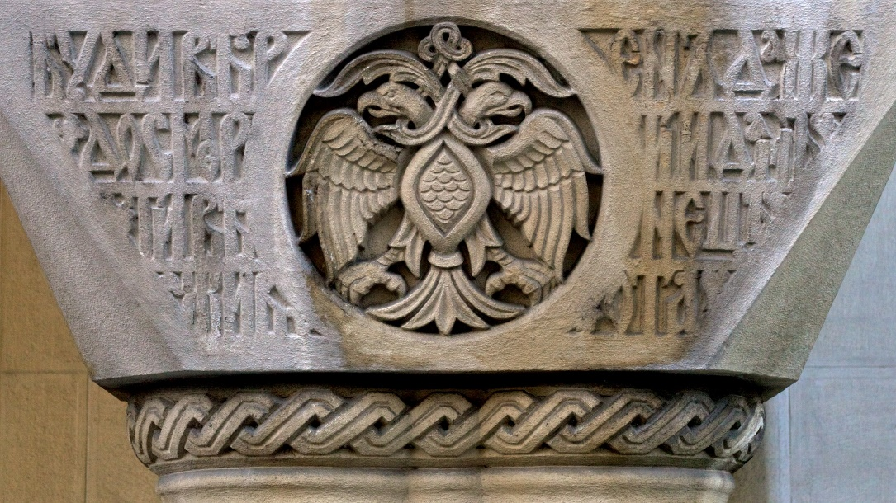
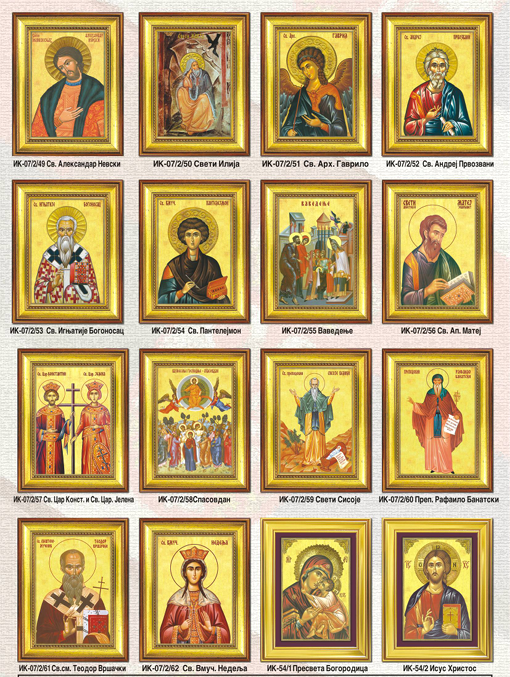
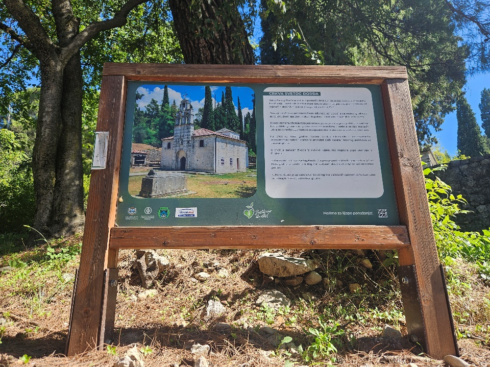
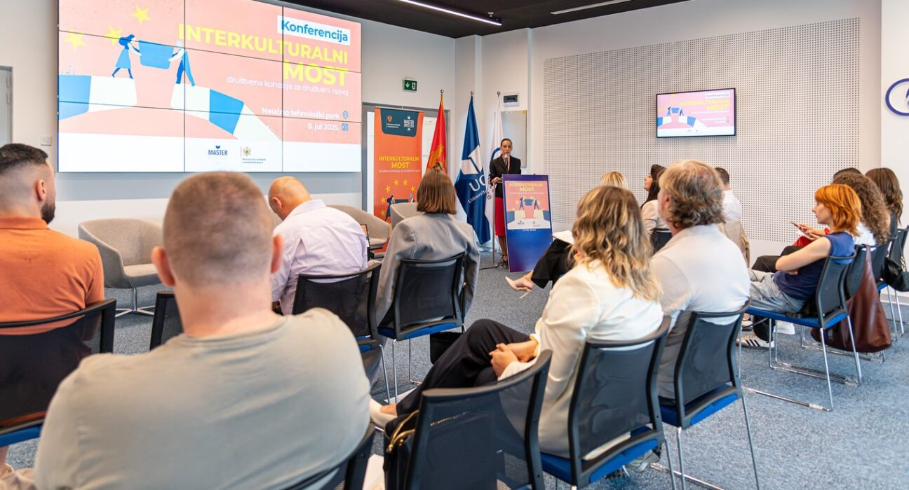
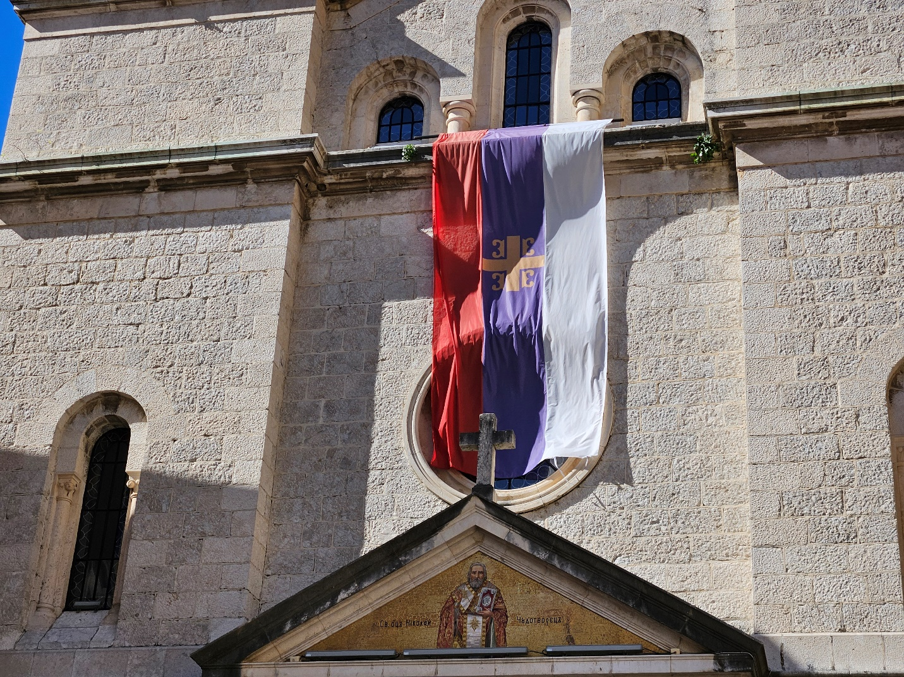
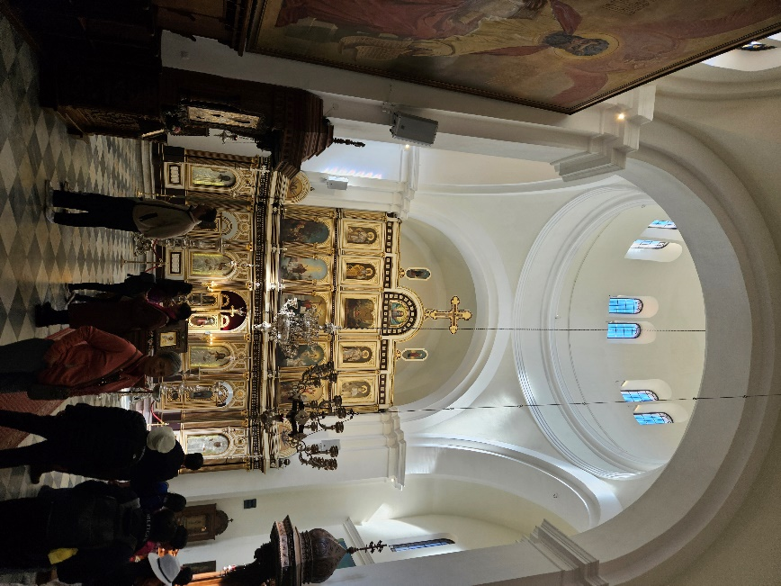
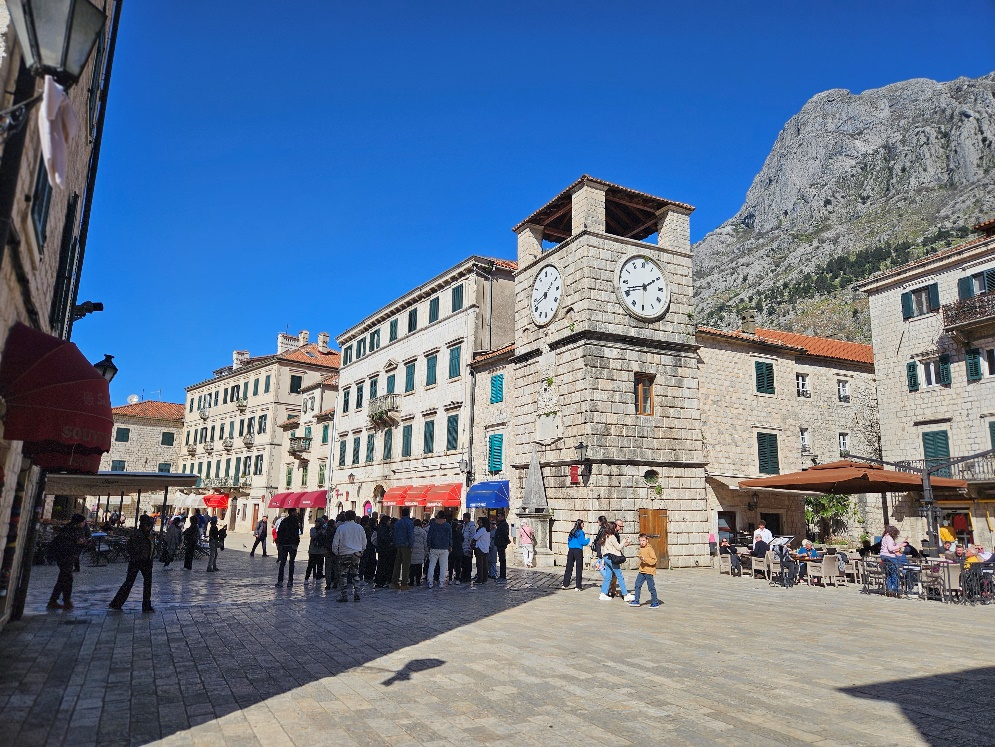
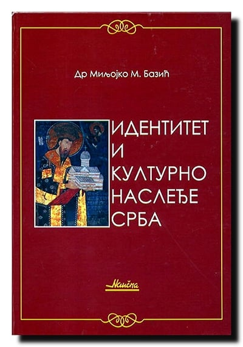
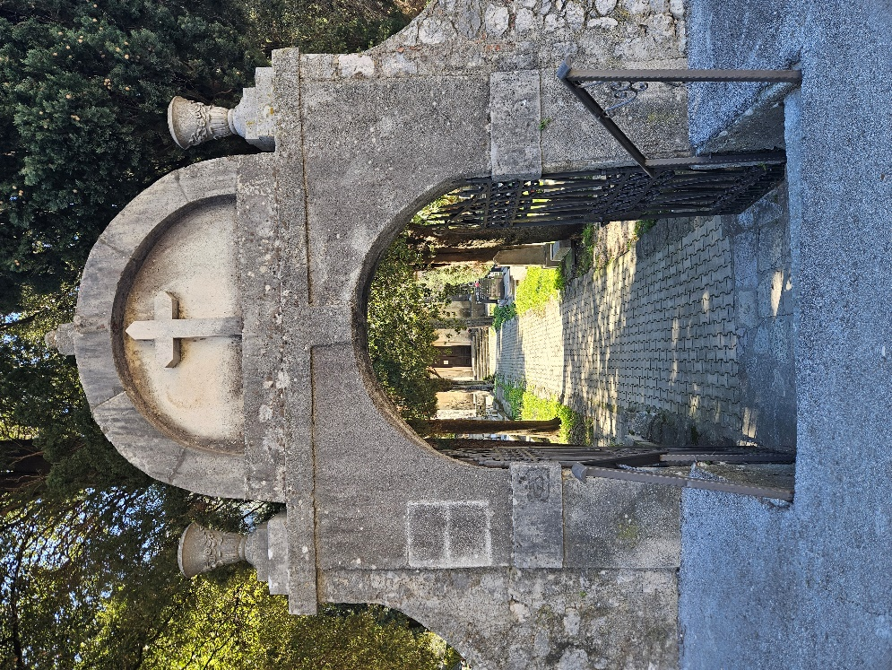
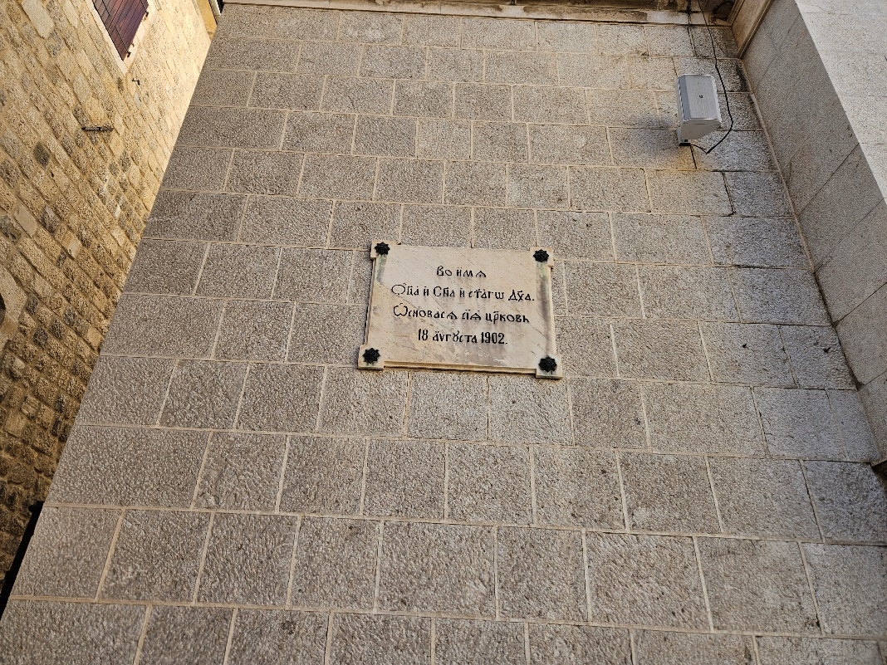

VIRTUELNI IDENTITET SRBA
Tematske cjeline
Kompletni tematski tekstovi o kulturi, jeziku, digitalnom identitetu, mladima i očuvanju nasljeđa.
19 cjelina iz izvornog dokumenta

Tematski tekstovi
Virtuelni identitet kao savremeni oblik očuvanja srpske kulture
Pročitaj tekst Objavljeno: 01.09.2026.
Tematski tekstovi
Mladi kao čuvari kolektivnog pamćenja u digitalnom prostoru
Pročitaj tekst Objavljeno: 02.09.2026.
Tematski tekstovi
Digitalna valorizacija srpske tradicije u Crnoj Gori
Pročitaj tekst Objavljeno: 03.09.2026.
Tematski tekstovi
Srpski jezik kao temelj identiteta u digitalnom dobu
Pročitaj tekst Objavljeno: 04.09.2026.
Tematski tekstovi
Multimedijalni sadržaji u službi kulturnog pamćenja
Pročitaj tekst Objavljeno: 06.09.2026.VI
Tematski tekstovi
Identitet kao živi proces: tradicija u savremenom kontekstu
Pročitaj tekst Objavljeno: 07.09.2026.
Tematski tekstovi
Uloga digitalnih platformi u očuvanju nacionalnog identiteta
Pročitaj tekst Objavljeno: 08.09.2026.
Tematski tekstovi
Kultura sjećanja u digitalnom formatu
Pročitaj tekst Objavljeno: 09.09.2026.
Tematski tekstovi
Edukacija kao ključ očuvanja identiteta
Pročitaj tekst Objavljeno: 10.09.2026.
Tematski tekstovi
Srpska kultura u javnom digitalnom prostoru
Pročitaj tekst Objavljeno: 11.09.2026.
Tematski tekstovi
Interkulturalni dijalog i društvena kohezija
Pročitaj tekst Objavljeno: 13.09.2026.
Tematski tekstovi
Digitalna arhiva kao trajno nasljeđe
Pročitaj tekst Objavljeno: 14.09.2026.
Tematski tekstovi
Kreativni izrazi mladih u afirmaciji identiteta
Pročitaj tekst Objavljeno: 15.09.2026.VI
Tematski tekstovi
Digitalna pismenost i kulturna svijest
Pročitaj tekst Objavljeno: 16.09.2026.
Tematski tekstovi
Savremena prezentacija tradicionalnih vrijednosti
Pročitaj tekst Objavljeno: 17.09.2026.
Tematski tekstovi
Kulturni identitet kao resurs zajednice
Pročitaj tekst Objavljeno: 18.09.2026.
Tematski tekstovi
Virtuelni prostor kao mjesto susreta generacija
Pročitaj tekst Objavljeno: 19.09.2026.
Tematski tekstovi
Očuvanje identiteta u vremenu globalizacije
Pročitaj tekst Objavljeno: 21.09.2026.
Tematski tekstovi
Budućnost srpskog identiteta u digitalnom dobu
Pročitaj tekst Objavljeno: 22.09.2026.Nema rezultata za uneseni pojam.
Objavljeno: 22.09.2026.